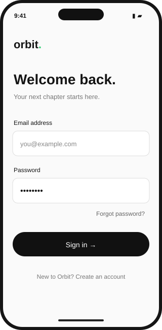
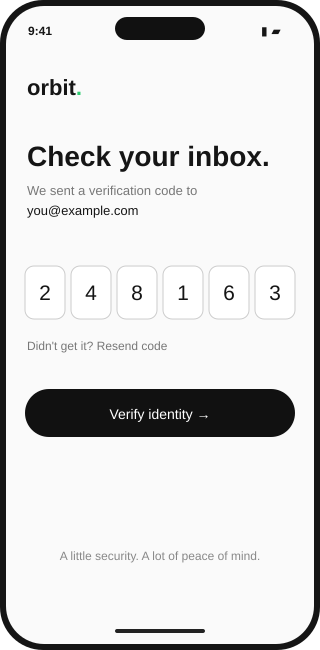
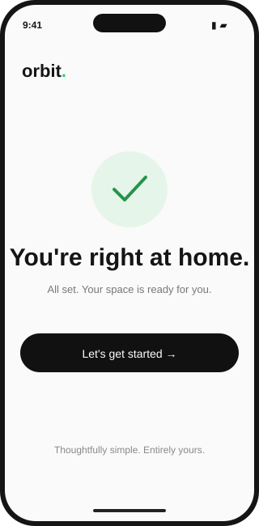

SELECTED WORK / 01
Web 3 Onboarding
A considered onboarding experience that makes getting started feel simple. This concept brings sign-in, account verification, and a clear welcome into one consistent mobile journey, with helpful recovery paths at every step.
- DATE
- September 2026 · Concept
- PROJECT TYPE
- Mobile App
- ROLE
- UI / UX Design
01 / THE EXPERIENCE
A simpler way in.


